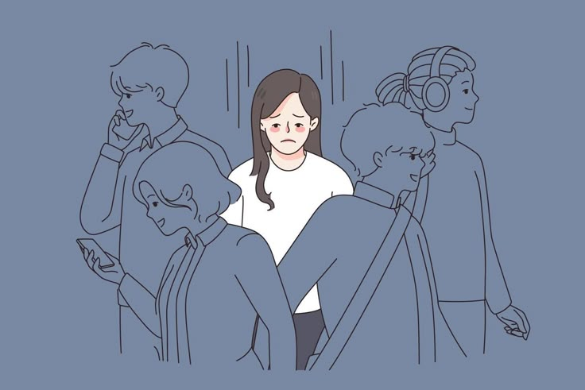
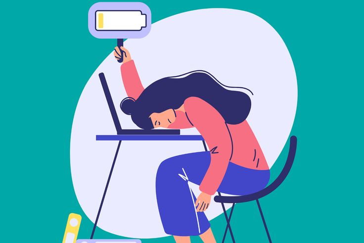
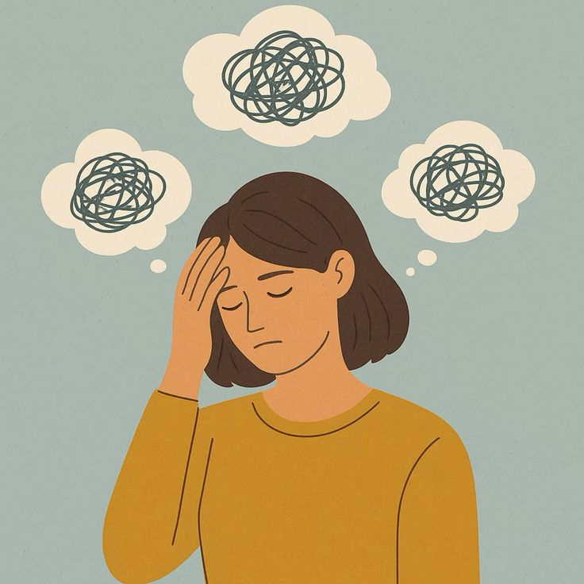

THE PSYCHOLOGY OF EMOTIONAL BURN-OUT



“Burnout isn’t weakness. It’s proof of how long you tried to be strong.”
What exactly is emotional burnout?
Let’s get one thing straight — emotional burnout isn’t just about being “tired.”
It’s about a deep, soul-level exhaustion that sleep can’t fix.
It’s when your mind feels fried, your motivation is on life support, and your
ability to care? Completely numb. Emotional burnout happens when your brain
and body have been running on stress mode for way too long — with no time to recover.
It’s like trying to charge your phone while using it on 100% brightness, with every
app open — at some point, it’s gonna overheat and shut down. The same goes for us.
So what causes it?
A lot of people think burnout only comes from jobs or school — but emotional burnout
runs deeper than that. It’s caused by prolonged exposure to emotionally draining
situations. That can mean:
- constantly managing other people’s emotions.
- suppressing your own feelings to keep the peace.
- dealing with chronic anxiety, family pressure,
people-pleasing, trauma cycles, or even just existing in a
high-stimulation world without a pause button.
Your brain is constantly on alert, trying to meet expectations,
avoid danger (real or perceived), and stay socially acceptable —
and eventually, it collapses under the emotional weight.
What does it feel like?
Burnout has a way of sneaking in. It doesn’t always feel dramatic — it often feels like
apathy, or this weird emotional flatline. You stop caring about things you used to love.
You stop replying to texts not because you hate people, but because the thought of
holding a conversation feels like lifting a mountain. You get irritated over the
smallest things, but also feel too drained to react. Your sleep sucks. You either
oversleep and wake up exhausted, or you lie awake overthinking until 3am. You cry easily
or not at all. And worst of all — you start to wonder,
“What’s wrong with me?” like you're broken. Spoiler: you're not broken.
You’re burnt out.
What’s the brain actually doing during burnout?
Let’s break this down logically. Emotional burnout happens when your stress-response
system stays stuck in “on” mode. Normally, stress triggers cortisol, adrenaline, and
a quick burst of energy so you can survive — fight, flight, or
freeze. But when stress is constant and recovery is rare, your brain stops
functioning properly.
- Cortisol levels stay high → This messes with your mood, memory, and sleep.
- Your amygdala (threat center) goes into hyperdrive → You get easily triggered.
- Your prefrontal cortex (logical part) shuts down →Decisions feel impossible.
- Dopamine levels drop → You lose motivation, interest, and joy.
This isn’t laziness. It’s your brain screaming, “I’ve been in survival mode for too long.”
Why rest doesn’t always fix it?
We’re told “just take a break” — but here's the truth: rest doesn’t work when your
nervous system still thinks it’s in danger. You could sleep 10 hours, scroll all day,
watch comfort shows — and still wake up feeling like your body weighs 1000 pounds.
That’s because rest isn’t recovery when the cause of burnout is still active.
If you’re still stuck in toxic dynamics, overextending yourself, ignoring your
own needs, or numbing your emotions — your system doesn’t get the signal that
it’s safe to relax.
Signs you might be emotionally burnt out!
Let’s be real. You don’t need a clinical checklist to know something’s
off. But in case you’re second-guessing yourself, here are signs that scream burnout:
- Constant fatigue, even after sleeping.
- Loss of passion, joy, or interest in things you used to love.
- Feeling disconnected from yourself or like you're just “going through the motions”.
- Dreading simple tasks (like brushing your teeth or answering texts)
- Feeling emotionally numb or overly emotional all the time.
- A short fuse, irritability, or feeling like you’ll snap for no reason.
- Isolating yourself but still feeling overwhelmed when you're alone.
If you see yourself in more than a couple of these?
You're not dramatic. You're burnt out.
Why burnout hits feelers, helpers, and perfectionists harder?
If you're someone who:
- always shows up for others.
- overthinks every decision.
- wants to be liked or never disappoint people.
- feels guilty for saying no
...then you’re more likely to end up emotionally burnt out. Why? Because
your brain is working overtime trying to manage emotions that aren’t even yours.
You become the therapist friend, the fixer, the peacemaker, the golden child, the
responsible one. And nobody checks if you’re okay — including you. Burnout doesn’t
mean you failed. It means you’ve been
doing too much for too long without enough emotional support, space, or self-compassion.
How do you start healing from emotional burnout?
Not overnight. Not through a Pinterest quote. But it starts
with awareness — naming it, seeing it, and letting yourself rest without shame.
You begin by:
- Creating emotional boundaries (even with people you love)
- Letting yourself not be productive for once.
- Doing “boring” self-care: water, food, gentle movement, sunlight.
- Saying no without explaining yourself.
- Journaling or venting without filtering it.
- Reconnecting with things that feel like you
(even if it’s just staring at the sky for a while)
And the biggest one? Letting go of the pressure to be okay all the time.
Because you weren’t meant to function like a machine. You were meant to feel.
To pause. To fall apart sometimes. Healing burnout isn’t glamorous.
It’s quiet. It’s slow. But it’s worth it.
Final Words
Burnout doesn’t mean you’re weak. It means you’ve been strong for too long without
a break. It’s your mind and body asking you to stop pretending you’re fine.
It’s your system saying,“I can’t keep surviving like this.” So don’t wait for a
full breakdown to start taking care of yourself. Start now — slowly, gently,
without guilt. Because you matter. And rest isn’t a reward. It’s a right.